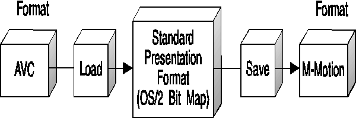

MMIO provides a set of options in its API to support two modes of file access-translated and untranslated. These modes enable an application to access data in its pure, proprietary format, or in a standard presentation format when performing its I/O operations. An IOProc can be written to optionally support both access methods.
The default mode of access, untranslated, allows the caller to perform I/O of file data in its native format. All header information and any data is written to a file or read from a file and presented at the caller level without modification.
The optional mode of access, translated, is the method used to mask proprietary data formats and allow a caller to use standardized header and data formats for a specific media type (for example, audio, image, or MIDI). A set of standard header formats and accompanying data formats have been defined as the standard presentation format for these purposes. An IOProc can be written to optionally support the standard format. It performs the translation of header information, data information, or both from its native format to the standard format for that media type during read and write type operations. The translation is performed for the file header and data.
With full translation capability enabled in pairs of IOProcs, it is possible to convert files from one format to another very easily. File conversion is simply a combination of loading from one file and saving to another. For example, an application can read from an AVC image file with translation enabled, to the standard presentation format, which is the OS/2 bitmap. The application can then use the bitmap as desired, including displaying it on the screen, image manipulating, and printing. Alternatively, the bitmap could be saved in a different file format such as M-Motion, by writing to the M-Motion IOProc with translation enabled. For example:
I/O procedures and applications must use the same standard presentation format of data defined for each media type for conversion to be enabled. (The media types defined are image, audio, MIDI, digital video, and movie.) These standard formats apply to media descriptive (header) information and media content. The standard description structures are supersets of the headers each file format normally uses. This permits all formats to place the subset of their information into the standard form for other applications to access. Similarly, each specific format can retrieve only the subset that is necessary for its purpose. The standard content format is a usable data format representation that maintains as much quality as possible.
Translation functions assist these standard forms in helping to ensure that data is portable between applications, IOProcs, and the operating system services. The structures containing descriptive information have fields that can be mapped to system structures, such as the OS/2 operating system's BITMAPINFOHEADER. The content format must be directly usable by the operating system and services, or by standard hardware devices.
The descriptive header and content formats are tightly coupled. If a file contains a media item, an application can query the header describing the media. The IOProc returns the header, which includes the supported content format most closely matching the information actually in the file. For example, if an image file contains 21-bit YUV data, the IOProc for that file informs the application that it is providing 24-bit RGB. The IOProc is responsible for translating all subsequent read operations from YUV to RGB. In addition, when an application is creating a new media element, it can set the header for a new media item. All subsequent translated write operations, which are sent from the application to the IOProc, must contain data in the content format described by the header.
Each data type uses different description structures and content formats. The following table gives an overview of the standard presentation formats for supported media types.
┌──────────┬──────────┬────────────────────────────────────────┐ │Media │Header │Data │ ├──────────┼──────────┼────────────────────────────────────────┤ │Audio │MMAUDIO │PCM 11.025, 22.05, 33.1 Khz │ ├──────────┼──────────┼────────────────────────────────────────┤ │Image │MMIMAGE │OS/2 1.3 bitmap (24 bit RGB, 1, 4, 8 bit│ │ │ │palette) │ ├──────────┼──────────┼────────────────────────────────────────┤ │MIDI │MMMIDI │Format 0 or 1 │ ├──────────┼──────────┼────────────────────────────────────────┤ │MOVIES │MMMOVIE │Multi-track video and audio │ ├──────────┼──────────┼────────────────────────────────────────┤ │VIDEO │MMVIDEO │16, 24 bit RGB, 4, 8 bit palette │ └──────────┴──────────┴────────────────────────────────────────┘
Note: Data translation in compound multimedia files is only performed on media elements in the file. Translation is not performed on non-multimedia files.